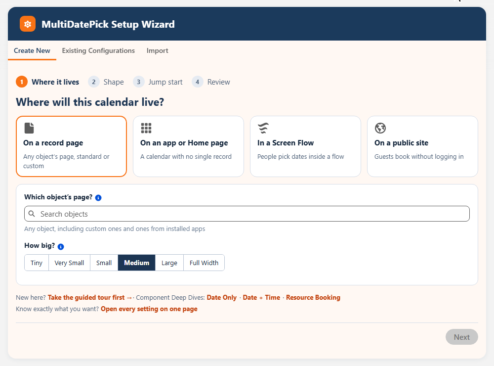
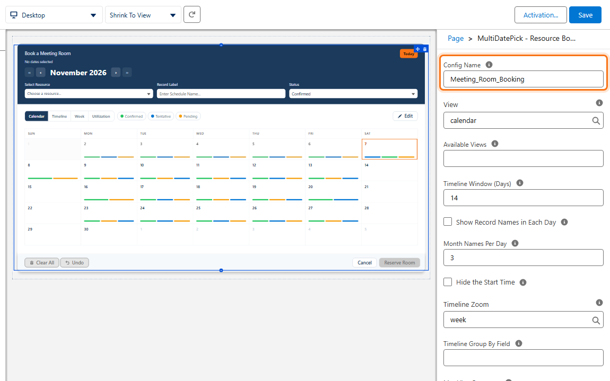
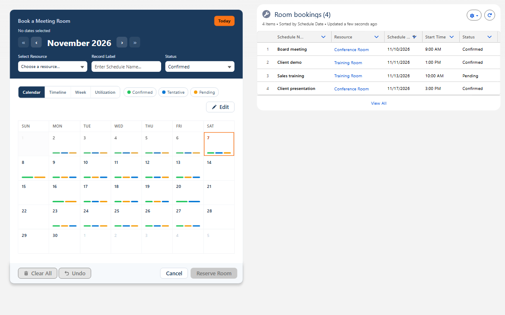
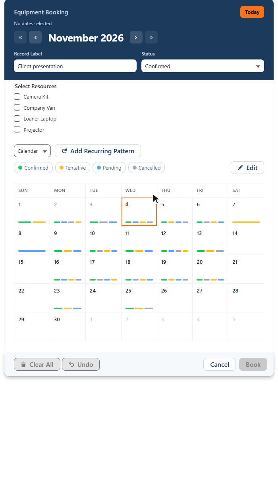
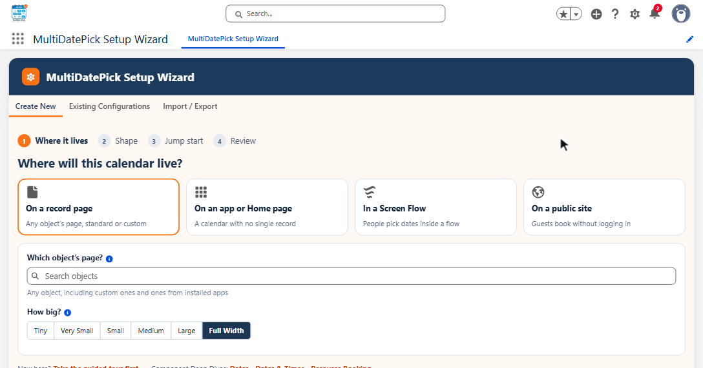
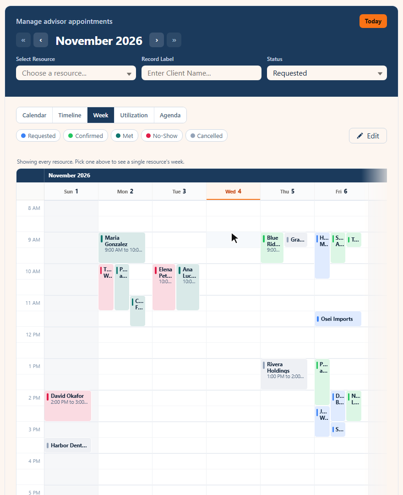
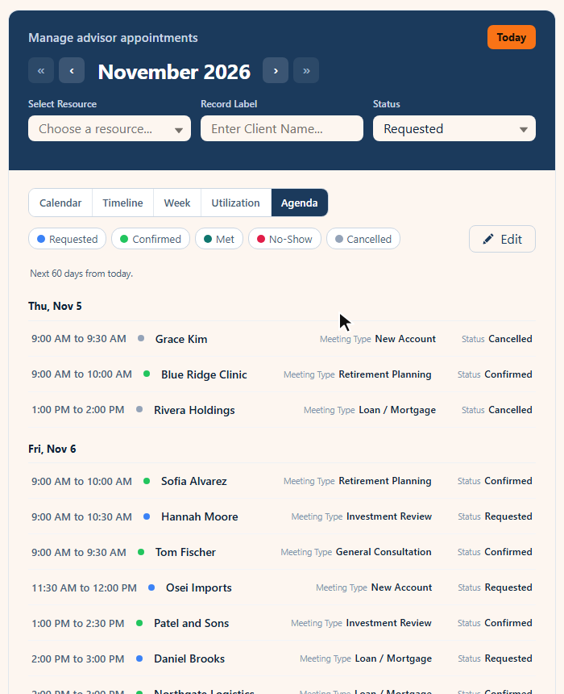

Salesforce Experience Cloud guest booking: a calendar customers use without logging in
Put self-service booking on a public or member Experience Cloud site. Guests pick a resource, a day and an open slot, and the booking lands in your org the moment they save.
Can guests book on a Salesforce Experience Cloud site without logging in?
Yes. MultiDatePick Resource Booking is a Lightning Web Component (LWC) you drop on any Experience Cloud page, including a public one. Guests pick a resource, a day and an open time slot without logging in, and each booking saves as a record in your own org, with capacity and conflict checks before Save.
3 steps, 0 lines of code
No developer, no Apex, no Flow loop. An admin sets it up with clicks.
-

Answer a few questions
The Setup Wizard picks the calendar and fills in your fields.
How the wizard works → -

Drop it on a page
Add the calendar in Lightning App Builder or Flow Builder and paste the Config Name.
Where it can go → -

Every booking is a real record
Every booking a site visitor makes saves as a record in your own org.
How it saves →
The live demo is a public Experience Cloud booking site
ACME Financial is a real Experience Cloud site running MultiDatePick as a guest. No login. It resets every hour, so book anything.

| On the demo site | Component | What you try |
|---|---|---|
| Book | Resource Booking | Pick an advisor, see only their open times and request one |
| Branches | Resource Booking | Choose a branch on the map or in the list, then book a time there |
| Block time | Resource Booking | Block an advisor's hours or close the office, with a reason |
| Days off | Dates | Pick several days at once, or every other Monday for two months |
| Workshops | Dates & Times | Pick the dates and the hours of each session |
| Manage | Resource Booking | Status colors, Edit Mode and several bookings changed at once |
| Team view | Resource Booking | Multi-day client engagements as bars across the team |
| Projects | Resource Booking | Three projects on a Gantt chart: health, critical path, links and the plan |
| Contractor | Dates & Times | A contractor's work days and hours, with a weekly pattern |
| Buttons | Resource Booking | Your own buttons that run a Flow or open a link |
Ten pages, one public site. Each page is one calendar with its own config, and together they use all three components. Block a time on one page and watch the slot gray out on Book.
Four things people self-book on a public booking page
“Can they just pick their own dates instead of emailing us?” Yes.
Customers pick a date and an open time with the person or resource they want. Set the appointment times each advisor offers.
Resource BookingCandidates, contractors and volunteers click the days they can work. One record per date.
DatesMembers book rooms, desks, courts or equipment against live capacity.
Resource BookingStudents and attendees enroll in dated sessions. A session closes when it is full.
Dates & TimesSelf-service booking in Salesforce, without a second vendor
The usual route is an external scheduler synced back into Salesforce. MultiDatePick is a Lightning Web Component, so it writes straight to your objects.
| Self-service need | External scheduler | MultiDatePick |
|---|---|---|
| Let a customer book a slot | Booked elsewhere, synced back later | Saved as a record in your org on click |
| Show only free slots | Only as fresh as the last sync | Reads your live records on page load |
| Stop double-booking | Two calendars that can disagree | Conflict and capacity checks on save |
| Security review | A second vendor holding customer data | 100% native. Data never leaves the org |
| Reporting and automation | Wait for the sync, then report | Flows, reports and dashboards on day one |
Set up a public booking page in Salesforce
Five steps, all point and click.
- 1. Build a Resource Booking config in the Setup Wizard
- 2. Drag Resource Booking onto the page in Experience Builder
- 3. Set Config Name and Static Parent Record Id
- 4. Grant guest access
- 5. Publish and activate

| Builder label | On a public booking page |
|---|---|
| Config NameconfigName | Your Setup Wizard config. Fills in the objects and fields. |
| Static Parent Record IdstaticRecordId | One parent record. The page has none, so this loads existing bookings and blocked times. |
| Show Other People's Bookings AsbookingPrivacy | Busy for site guests, so visitors never see another client's name. |
| Limit per PersonlimitPerPerson, limitPerPersonClientField | 1 gives each visitor one upcoming booking, counted by the email they enter in the booking form. Checked on the server. |
| Only These TimesavailableTimes | Offer only the start times you choose, such as 9:00, 10:30 and 1:00. |
| Conflict BehaviorconflictBehavior | Block (the default). A clash never saves. |
| Capacity FieldcapacityField | A session with 20 seats closes at 20. |
| Business Hours Start / End FieldbusinessHoursStartField, businessHoursEndField | Publish only the hours each resource offers. |
| Existing Dates ModepreloadMode | Read only, so visitors see what is taken. |
| Enable Edit ModeenableEditMode | Off for guests. Guests cannot edit records. |
| View and Available Viewsview, availableViews | Week or Calendar. One or two views is plenty. |
Keep other clients' names private. In the Setup Wizard, set Show Other People's Bookings As to Busy for site guests. Visitors then see other bookings as a hatched Unavailable block with no name, no hover card and no link, while your staff still see every name. Left at Details, the default, every visitor sees who booked.
Each visitor needs their own record? Put the calendar in a Screen Flow and pass the record into Parent Record Id. A Flow can read it from the page URL, so it works for guests too. Static Parent Record Id or a Flow
Make it look like your site. The same Setup Wizard config can put your logo, your name and your brand colors on the calendar's band, with a banner photo behind it. Guests see them too. Brand your Salesforce booking calendar
Guest user booking in Salesforce: what guests can do
These are Salesforce rules for every app on a public site. MultiDatePick is built around them.
| Action | Guest (public page) | Logged-in member |
|---|---|---|
| See open slots and which times are taken | ✓ | ✓ |
| Book (create a record) | ✓ | ✓ |
| Add the booking to Outlook, Google or Apple Calendar | ✓.ics after Save | ✓ |
| Move or edit a booking | ✗Salesforce guest limit | ✓with permission |
| Cancel or delete | ✗Salesforce guest limit | ✓with permission |
| A personal “my bookings” calendar | ✗all guests share one user | ✓via a Screen Flow |
Assign the MultiDatePick - Guest permission set to the site's guest user; it carries the component access and the read and create rights guests are allowed. Add read and create on any objects of your own, a guest sharing rule, then publish and activate.
Guests cannot own records, so Salesforce gives each guest booking to a default owner. Set it in Experience Workspaces, Administration, Preferences.
A guest tries to move a booking? MultiDatePick says why it cannot, instead of an unexplained error. The full six-step guest checklist is on App, Home & Experience Pages.
Choose the view for the audience
The view is a property on each component, so a public page and a staff page can show the same data differently.


Timeline and Utilization suit staff pages. See all seven calendar views.
Experience Cloud booking questions
Short answers to what admins ask first.
Can guests book on a Salesforce Experience Cloud site without logging in?
Yes. MultiDatePick Resource Booking is a Lightning Web Component (LWC) you drop on any Experience Cloud page, including a public one. Guests pick a resource, a day and an open time slot without logging in, and each booking saves as a record in your own org, with capacity and conflict checks before Save.
Can I limit seats per session for public bookings?
Yes. Give the resource a capacity, such as 12 seats, and every time slot shows a live badge like 3/12. A full slot cannot be picked, so a public session never takes more bookings than it has seats. Minimum notice, buffers and closures apply to guests too.
Can a guest user edit or cancel a booking?
No. Salesforce lets guest users read and create records but never edit or delete them, on every app. If a guest tries to move a booking, MultiDatePick explains why instead of failing quietly. Put edit and cancel on a member site where people log in.
Does it work on a member site with logins?
Yes. Logged-in members book under their own permissions, so editing, cancelling and per-person calendars driven by a Screen Flow all work there.
Do I need Apex or an external scheduling tool?
No. Build the booking setup in the Setup Wizard, drag the Resource Booking component onto the page in Experience Builder and set Config Name. Bookings save as records on your own Salesforce objects.
Where is the booking data stored?
In your Salesforce org, on the objects you choose. MultiDatePick is 100% native: no external servers, and nothing is synced to another vendor.
Self-service booking on your Experience Cloud site
Book on the live demo now, or tell us where to send the launch note.
$20/user/month, every feature included, 30-day free trial. 100% Salesforce native.